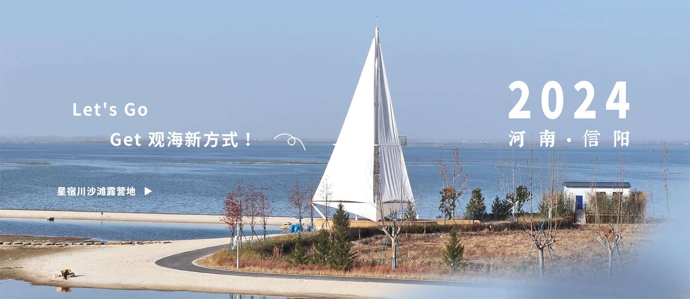
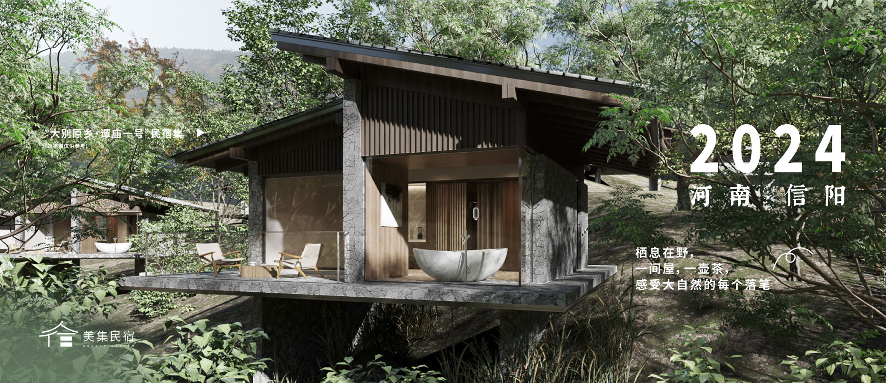
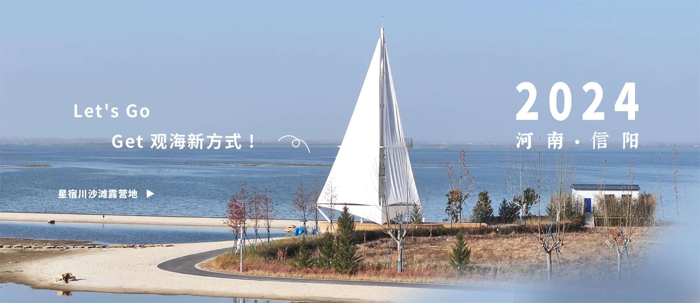
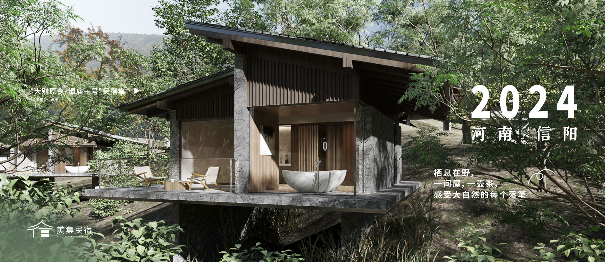
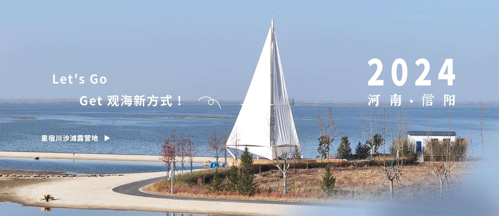
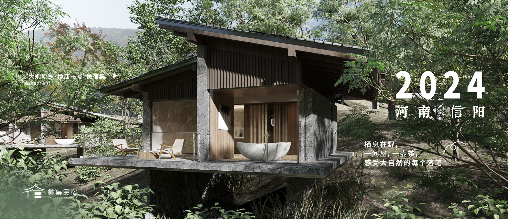
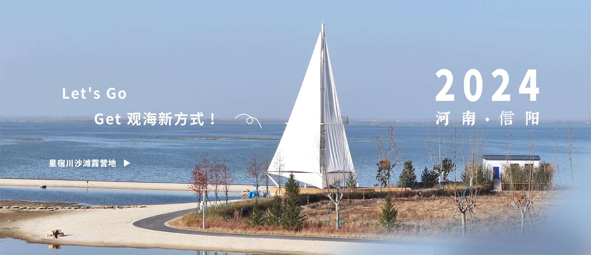
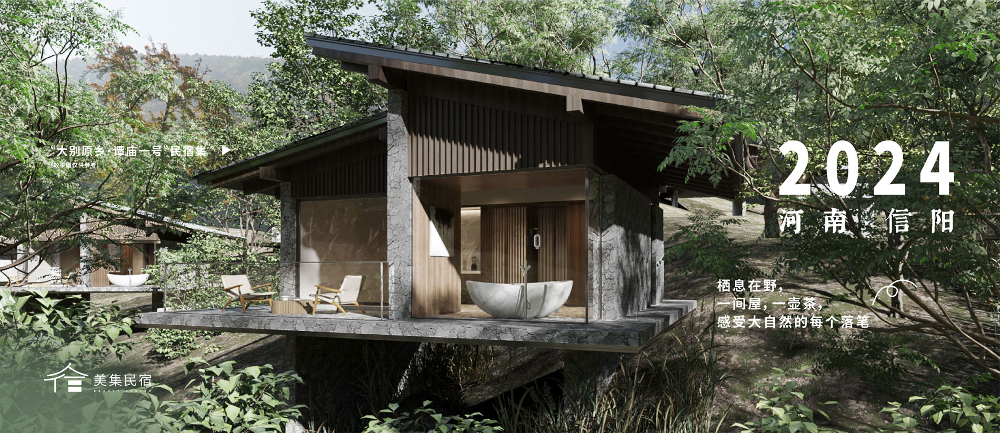

佛光、云海、雾淞、雨淞、霞光、异国花草、奇峰怪石、瀑布流泉
南湾湖风景区由南湾湖和南湾国家森林公园组成，以南湾湖为中心，以山林、岛屿为风景内涵，具有丰富的自然景观和人文景观，被誉为“中原第一湖”、“北国的江南，江南的北国”。
北依淮河，南靠大别山，为国家AAAA级景区，观赏面积约80平方公里，目前已开发多个景区、近百个景点，是中原地区最大的集“茶、竹、禅、山水情”为一体的生态旅游胜地。
灵山，位于罗山县城西南面44公里处，与避暑胜地鸡公山遥遥相望。灵山旧名为霸山，因其“每有云气覆顶必雨，验之信然”，帮改称灵山。灵山山体面积40平方公里，主峰金顶海拔827.7米，为罗山县第二高峰。
黄柏山旅游区是一个集国家4A级旅游景区、国家森林公园、首批“中国森林氧吧”、省级自然保护区、中国华侨国际文化交流基地于一体的风景名胜区
 






